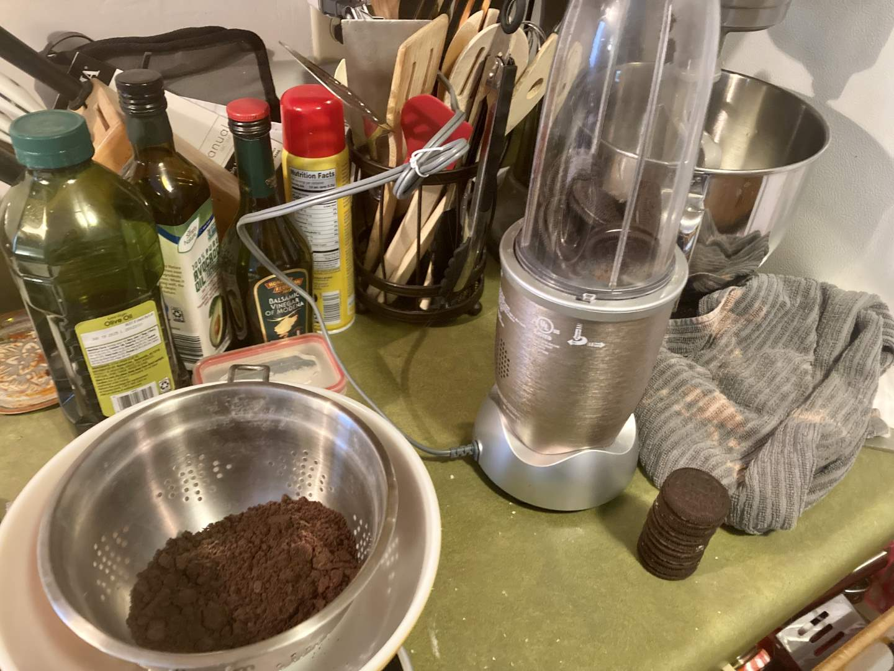
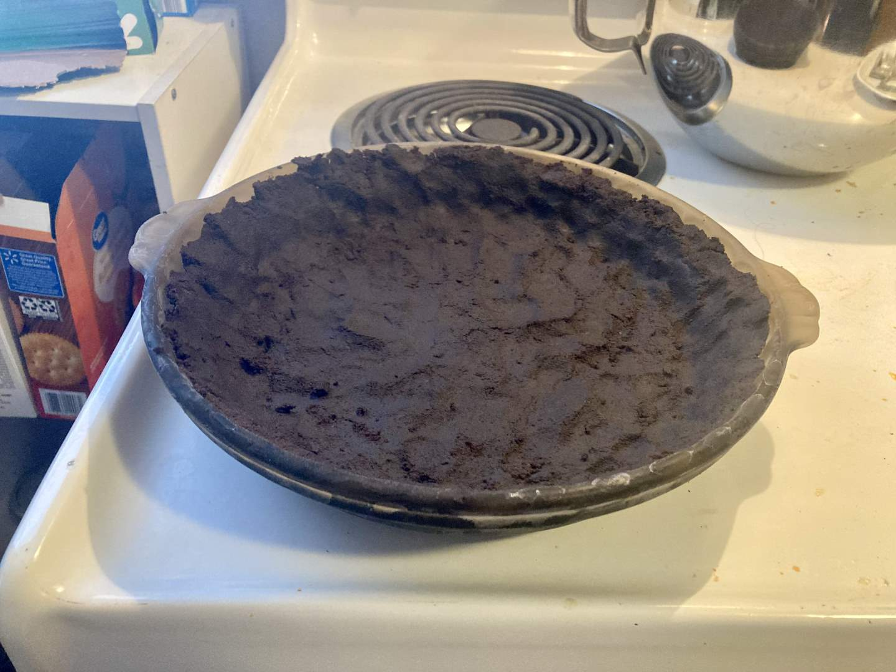
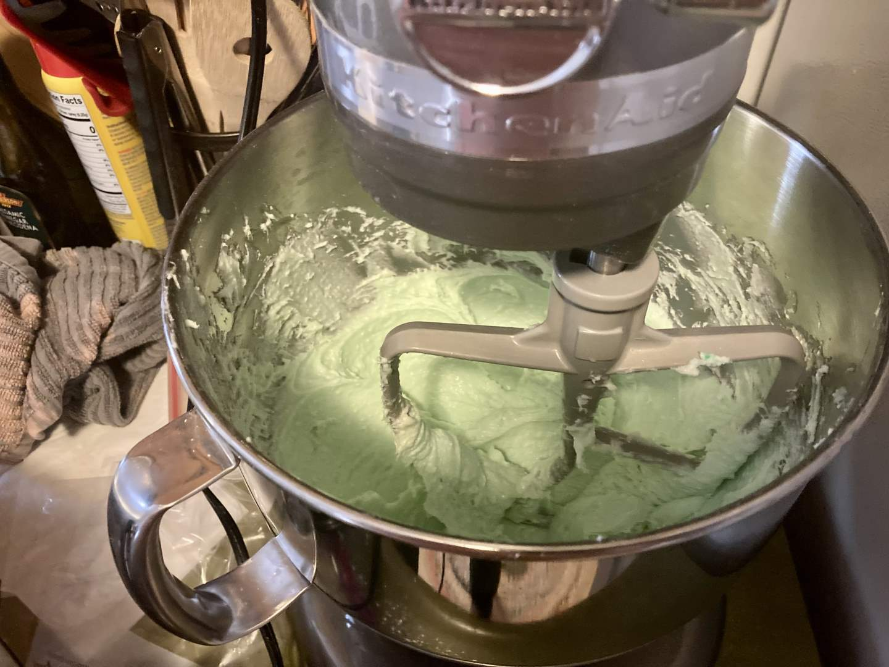
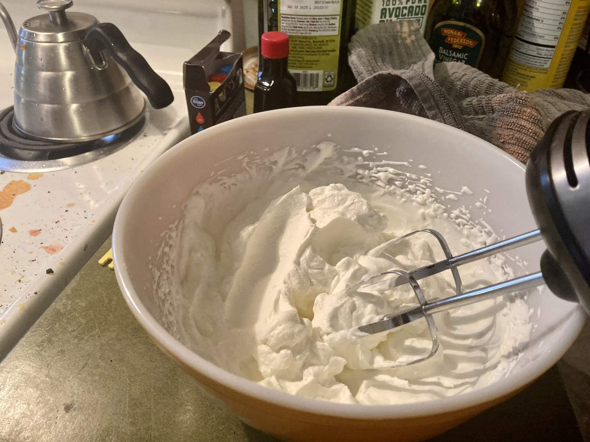
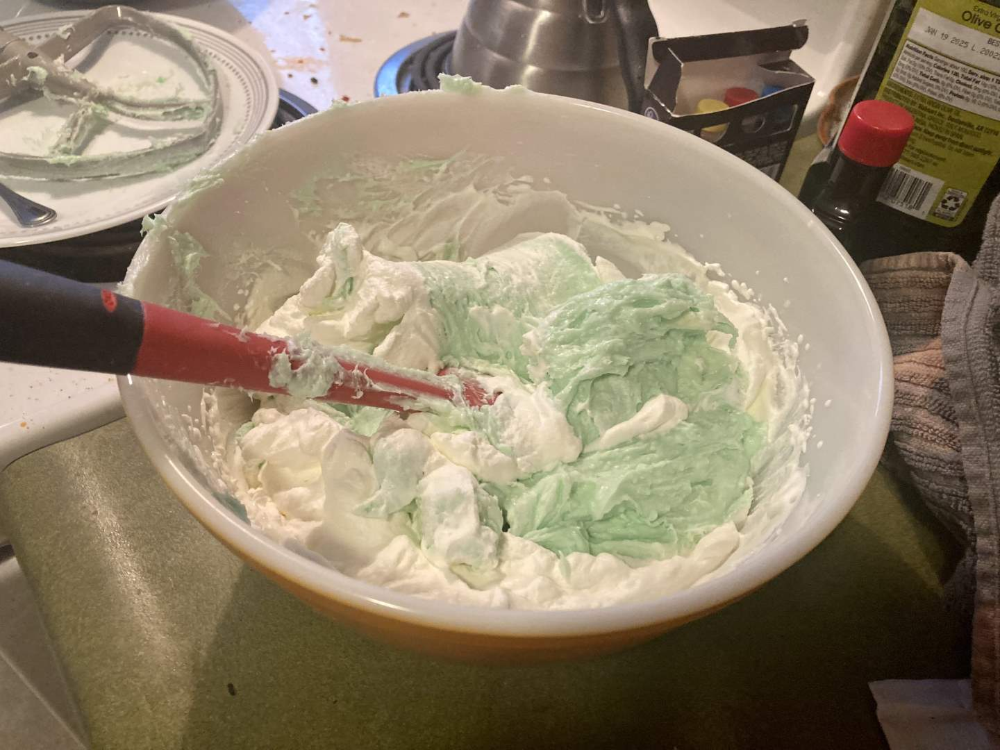
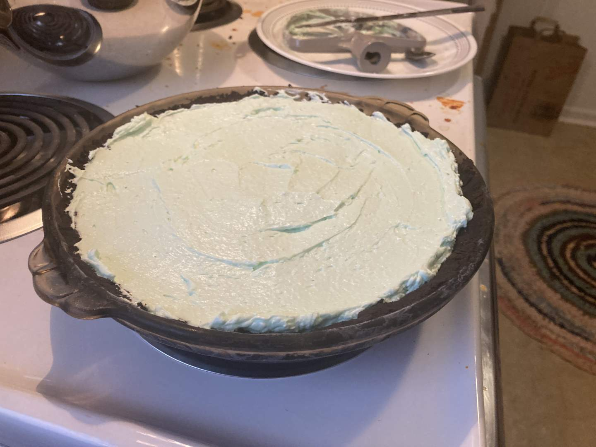
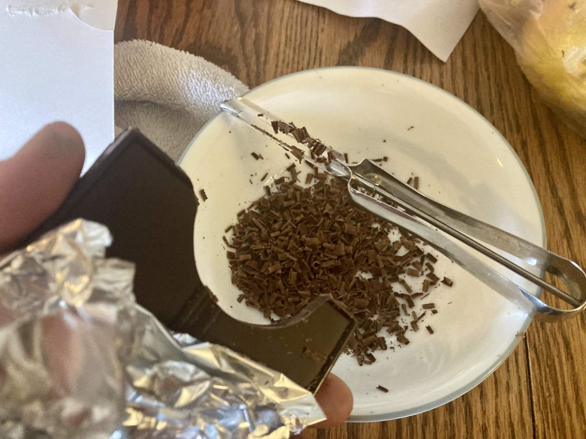
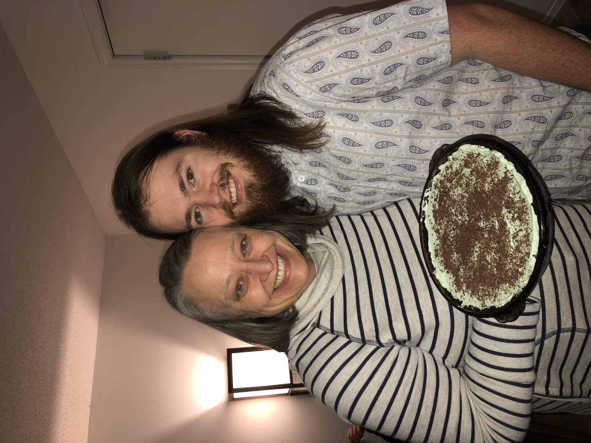
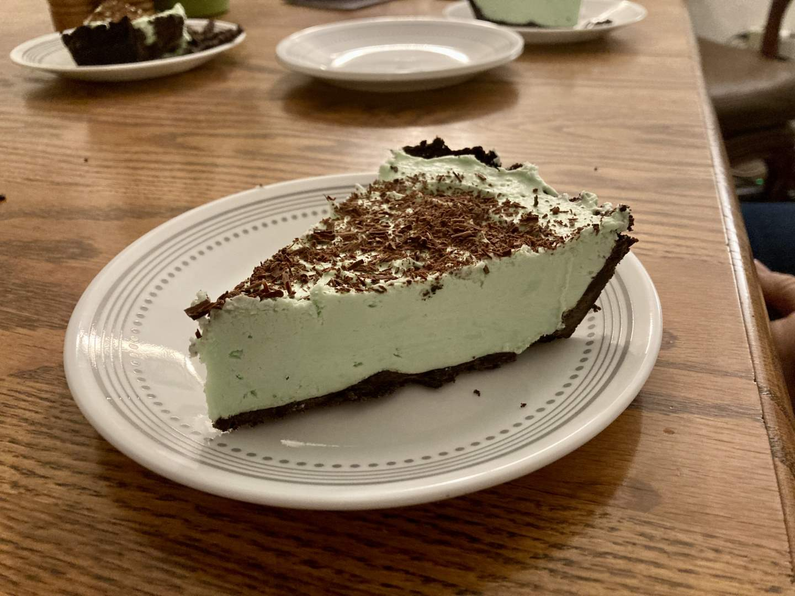

Pie 25: Grasshopper
2023-12-15Filling recipe is from The Spruce Eats.
Crust recipe from Sally's Baking Addiction.
Taste:
Difficulty:
Vibes:
Suggested pairings: a steakhouse birthday dinner
Cake is the dominant birthday dessert in the US for good reason. The icing can easily be turned into a vehicle to convey any cheery message or illustrate any children’s cartoon. When aesthetics are valued over flavor, the cake comes out on top.
As Dorothy Robertson said in the Richmond Times-Dispatch on March 27, 1960, “Pie, the Great American Dessert, has had more strange names, and sometimes stranger ingredients, than almost anything in the cook’s roster of desserts.”
The world of pie is weird and wonderful, with options for everything. In my humble opinion, birthday pie should focus less on decoration and more on a flavor especially desired by the subject of the occasion. It was with these thoughts in mind that I prepared a Grasshopper Pie for my mom’s birthday last week. It is one of her favorite desserts.
 To quote Robertson again, “This pie has no grasshoppers in it, just delicious taste.” The pie is named after a mint-flavored mixed drink, which was named for its strong green tint. To make the chocolate crust, I pulverized 22 Oreos in a blender (creme and cookie) and mixed in a half-stick of melted butter before pressing the mixture into a pie pan and freezing.
To prepare the filling, I combined two creamy mixtures. The first was green-dyed, confectioner’s-sugared, and mint-flavored cream cheese.
 The second was a simple batch of whipped cream. I folded the two together and added a bit more green food coloring to deepen that grassy hue.
After spooning the filling into the frozen chocolate crust, I shaved some baking chocolate on top and froze the entire pie.
Katie Beth and I went with my brothers and parents to dinner, and then to look at Christmas lights around Columbia--a real family tradition. When we had seen enough we returned to our apartment to slice and eat the pie.
Unsurprisingly (since she requested it), my mom did like the pie a lot, but so did everyone else! It’s certainly a good pie and I would recommend it to anyone, especially those who like mint chocolate chip ice cream.
